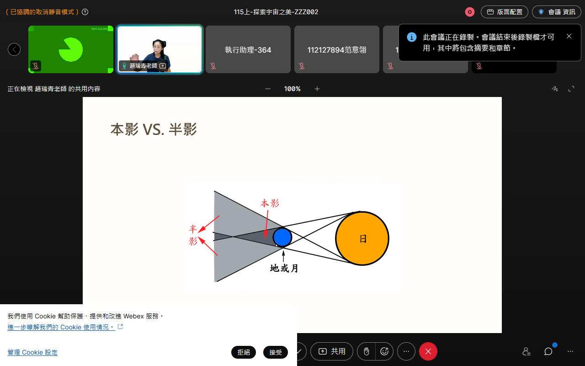

嬑
陳嬑萱
112122209 臺北學習指導中心 官方學術戰情中樞
115學年度上學期 (115-1)
•
修習 7 門核心大課 (15 學分)
•
學期目標：全科 90+ 榮譽生書香獎
平時成績 30% 四大支柱動態算分引擎
空大學則法定評量基準：折合學期總成績之累積實得積分 (滿分 30.00 分)
當前折合實得積分
6.49 / 30.00
SCORM 課綱單元點燈閱畢率 (佔比 20% ｜ 折合 6.0 分)
6.00 / 6.00 分
(100% 綠燈滿分 🏆)
SunNet LMS 在線學習時數 350h (佔比 20% ｜ 折合 6.0 分)
0.18 / 6.00 分
(10.4h / 350h)
視訊面授 29 場全勤出席 (佔比 30% ｜ 折合 9.0 分)
0.31 / 9.00 分
(1 / 29 場)
14 份平時作業全繳遞交 (佔比 30% ｜ 折合 9.0 分)
0.00 / 9.00 分
(0 / 14 份已繳交)
開學首週奠基成果：7 門課 100% 綠燈完成，已實時鎖定平時分基底！
學期總分已落袋 +6.49 Pt
14 份作業 D-Day 戰情矩陣
全學期 7 科 × 2 次 ＝ 共 14 份作業 (佔 9.0 分)
0 / 14 繳交 (缺14次)
在線學習時數 350h 自然燃起圖與動態速率收斂預測
即時累計步調、每日吸收速率（Velocity）與 50h 全科目滿分收斂預測曲線
當前累計
10.4 / 350.0 h
衝刺速率
17.5 h / 天
預計達標窗口
19.4 天後 (10/12)
視訊面授出勤·真實拍照存證與全自動替身稽核專區 (1/29 全勤核定)
100% 官方合規考勤標準：開課前 12 分鐘提早進場、課中定時拍照、下課後延後 10 分鐘離場，杜絕任何遲到早退爭議！
已核定全勤 1 場 ｜ 待守護 28 場
9/7 首場面授真實考勤影像（官方核銷存證）
人工智慧導論 (ZZZ002班)
身分核驗：112122209陳嬑萱
驗證就座

會議室在線：靜音守護
全程在線
課程與導師:
人工智慧導論 (陳廷哲 老師 · 分機 5183)
替身進場打卡 (提早11分):
2026-09-07 18:48:12
替身離場打卡 (延後12分):
2026-09-07 21:02:35
實際在線總時長:
134 分鐘 (標準110分)
空大系統出勤判定：100% 全勤合格 (首場 +0.31 Pt 落袋)
SHA-256: 7a9c8e...115f
未來 28 場自動出席守護機制（消除焦慮保障）
1. 開課前 12 分鐘自動喚醒就座 (防遲到)
雲端伺服器（GitHub Actions）會在每堂課前 12 分鐘精確喚醒，自動檢測 Webex 會議室開放狀態，一旦開房即以「112122209陳嬑萱」掛機就座。
2. 課堂中每 15 分鐘自動巡檢截圖 (留存證)
課堂進行期間，背景無頭瀏覽器每 15 分鐘自動截取視訊畫面與出席名冊，確保全時在線紀錄完整，課後即時同步歸檔。
3. 下課後延後 10 分鐘退出 (防早退)
下課時間到點不立即離線，延後守護 10 分鐘確認老師結束會議後才優雅登出，杜絕空大系統判定「早退」扣分。
4. 9/23 (雙開) & 10/5 (三開) 衝堂平行多開技術
遇衝堂時，系統自動啟動 2~3 組完全獨立的無頭 Chromium 容器，各自進駐各自會議室，互不干擾、同時掛機 110 分鐘，百分之百同時全勤！
115-1 全學期 7 門核心大課學術進度矩陣
點燈完畢率 100% 綠燈 ｜ 面授全勤守護 ｜ 作業次數與截止期限明確追蹤
共 15 學分 / 7 科全數及格 (全PASS)
全學期 29 場視訊面授排程總表 (雲端守護排程)
含 9/23 雙門衝堂平行多開、10/5 三門衝堂多開替身全勤排程
| 序號 | 面授日期 | 上課時段 | 觸發喚醒 | 課程名稱 | 授課教師 | 班級/屬性 | 出勤狀態 | 會議室直達 |
|---|